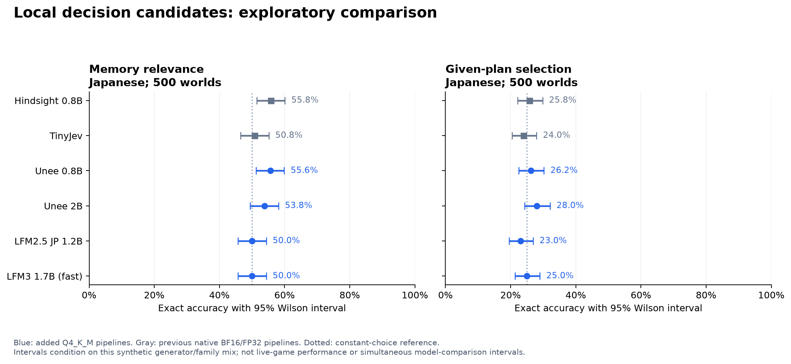

追加小型モデルの探索的比較
今回の高速設定では、追加候補に既存2実装を明確に上回る結果は得られませんでした。追加4候補の日本語正解率は、記憶判定が最大55.6%、作戦選択が最大28.0%。明示された制約に違反する作戦の選択は63.0%〜67.8%でした。本測定4,800件の実行失敗は0件です。
4候補を事前に固定し、それぞれ同じ1,200入力を評価しました。主評価は日本語の記憶判定500場面と
作戦選択500場面、英語の対応訳各100件は補助評価です。翻訳やモデル間の繰り返しを独立した場面数へ加えていません。
これは固定した合成問題と各実装設定での比較です。実戦勝率、自由な作戦生成、
新しい問題構造への一般化、Unity・Sentis内の動作や速度は測っていません。
前回の確証的なHolm補正2課題の解析は変更していません。
日本語の主評価

区間は固定した生成方法・分野構成に条件づけた、課題・実装ごとの区間です。
複数モデルの比較を同時に95%で覆う区間ではありません。native prompt、量子化、
回答方法が異なるため、モデル本体やパラメータ数だけの効果とは解釈しません。
CPUの応答時間
| 追加候補 | 中央値 | 95パーセンタイル |
|---|
| Unee 0.8B | 1.42秒 | 1.84秒 |
| Unee 2B | 3.01秒 | 3.88秒 |
| LFM2.5 JP 1.2B | 2.24秒 | 3.07秒 |
| LFM3 1.7B (fast) | 3.13秒 | 4.16秒 |
全1,200試行（日本語・英語、成功・失敗を含む）のHTTP・前後処理を含む所要時間です。
同じLinux CPU環境、推論4スレッド、1モデルずつ直列実行、入力キャッシュ再利用なし。
重みの初回ロードと固定warmupは別記録です。入力長とnative promptは実装ごとに違います。
前回の並列CPU測定値との速度比較には使いません。
設定と採点
- Uneeは公式のcompact prompt・parser・date factsを使用。生成温度0、確率の補正温度1。
公式どおりtop-20 logprobに含まれない候補へfloorを置くため、その発生件数も集計しています。
- LFMはnative chat templateと1文字の形式制約を使う低遅延向け設定です。
LFM3の思考を有効にした能力は評価していません。native parserで空のthinking wrapperを扱い、
クライアント側で回答を書き直す処理はありません。
- 正解・監査情報はモデル入力へ渡さず、制約違反の選択肢も後処理で修正しません。
失敗や形式不正は誤答に残します。Uneeの例外時にはraw応答が残らない場合があります。
- LFM3は実行環境の準備切替後、保存済み1,050件を保持して未完了150件だけ再開しました。
モデル・入力・source・CPU設定を再照合し、完了回答は再実行していません。
応答時間は保存された各試行の時間です。LFM3の最初のprocess RSS記録は失われているため、全実行のRSS最大値は示しません。
単純な事実確認の補助診断
日本語版LFMが主試験の記憶を全件「関連あり」と答えた後、色4問と引き出しの開閉4問を固定して、4候補で各1回ずつ確認しました。この8問は事後に選んだ対照です。主試験へ加算せず、信頼区間・有意差・一般的な精度は推定しません。
| 実装 | 正解 | 色 | 開閉の二択 | 実行失敗 |
|---|
| Unee 0.8B | 8/8 | 4/4 | 4/4 | 0 |
| LFM2.5 JP 1.2B | 6/8 | 4/4 | 2/4 | 0 |
| Unee 2B | 8/8 | 4/4 | 4/4 | 0 |
| LFM3 1.7B (fast) | 6/8 | 4/4 | 2/4 | 0 |
補助診断の全応答JSON · 補助診断の固定条件
保存物
統計値・制約違反・対応差・実行来歴JSON ·
ケース別CSV ·
推論前の固定プロトコル ·
集計・再開の補足記録
公式資料：Unee 0.8B ·
Unee 2B ·
LFM2.5日本語版 ·
LFM3 1.7B。
UneeはApache 2.0、LFMはLFM Open License 1.0です。